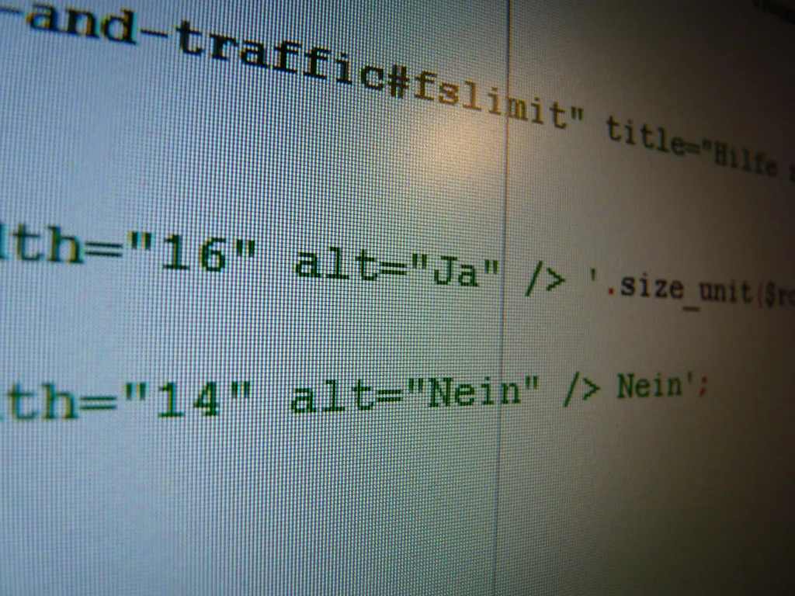

오픈AI가 사이버보안에 특화된 신규 모델 'GPT-6 사이버'를 공개했다. 이 모델은 소프트웨어의 취약점을 찾아내고 검증한 뒤, 실제로 악용 가능한지를 확인하고 수정 방안까지 제시하도록 설계됐다. 오픈AI는 허가된 범위 내에서만 작동하도록 모델을 훈련시켰다며, 지정된 대상과 규칙을 벗어나지 않고 성능 결과도 정확하게 보고하도록 안전장치를 마련했다고 설명했다.
공개 직후 가장 주목받은 성과는 모질라의 웹브라우저 파이어폭스에서 나왔다. 오픈AI 연구진이 GPT-6 사이버를 활용해 점검한 결과, 기존에 알려지지 않았던 고위험 취약점 81건을 새롭게 찾아냈다. 연구진은 단순히 취약점 목록만 넘긴 것이 아니라 재현 가능한 검증 자료까지 함께 모질라 측에 전달했고, 모질라는 이를 토대로 다수의 취약점에 대한 수정 패치를 이미 배포한 것으로 전해졌다.

성능 지표로도 발전이 확인됐다. 오픈AI에 따르면 GPT-6 사이버는 지정된 취약점을 실제로 공격할 수 있는지 평가하는 벤치마크인 '익스플로잇짐(ExploitGym)'에서 48.5%의 점수를 기록했다. 이는 이전 모델인 GPT-5.6 사이버의 32.1%보다 51% 상대적으로 향상된 수치다. 이 밖에도 주요 사이버보안 벤치마크 전반에서 이전 세대 모델 대비 뚜렷한 성능 개선이 나타난 것으로 평가된다.
리눅스 커널을 대상으로 한 실험 결과도 공개됐다. GPT-6 사이버는 알려진 1724건의 리눅스 커널 보안 취약점을 재현해냈고, 이 가운데 948건에 대해서는 실제로 작동하는 공격 코드까지 개발했다. 이는 동일한 조건에서 이전 모델인 GPT-5.6 솔(Sol)이 166건을 처리했던 것과 비교하면 다섯 배가 넘는 수치로, 대형언어모델의 취약점 탐지·공격 능력이 빠르게 고도화되고 있음을 보여준다. 리눅스 커널은 전 세계 서버와 클라우드 인프라 상당수가 기반으로 삼는 핵심 소프트웨어인 만큼, 이 영역에서의 취약점 발굴 속도가 빨라지는 것은 방어와 공격 양쪽 모두에 적지 않은 파급력을 지닌다.

다만 이런 성과는 양날의 검으로 받아들여진다. 취약점을 빠르게 찾아내 방어 측이 먼저 패치할 수 있도록 돕는 긍정적 효과가 있는 반면, 동일한 능력이 악의적 목적으로 쓰일 경우 공격자가 더 빠르고 정교하게 시스템을 뚫는 데 악용될 위험도 커진다. 오픈AI는 이런 우려를 의식한 듯, 모델이 사전에 승인된 대상과 범위를 벗어나지 않도록 하는 제어 장치를 강조하며 범위 밖 악용률이 매우 낮은 수준으로 관리되고 있다고 밝혔다.
업계에서는 이번 공개를 계기로 AI 기반 보안 점검 도구의 활용이 한층 확산될 것으로 내다보고 있다. 소프트웨어 개발사 입장에서는 사람이 수개월씩 들여야 찾아낼 수 있는 취약점을 훨씬 짧은 시간에 발견할 수 있다는 점에서 매력적이지만, 동시에 동일한 모델이 공개되거나 유출될 경우 방어 체계가 미흡한 기관을 노리는 공격 도구로 전용될 위험도 함께 커진다는 우려가 제기된다. 국내에서도 과학기술정보통신부가 최근 AI를 활용한 보안 점검 과정에서 바이러스토탈 등 외부 서비스를 이용할 경우 자칫 민감 정보가 유출될 수 있다며 주의를 당부한 바 있다. 대형언어모델의 보안 역량이 커질수록, 이를 책임 있게 활용하기 위한 규칙과 관리 체계를 함께 정비해야 한다는 목소리도 커지고 있다.